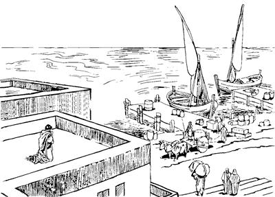

Allah arukna Malaikat nhon Kornelius wamoghag kulukulaogha (10:1-8)
10
1 As Kaisarea nimi nhon sina Kornelius wamog. Kornelius ponena, Roma nimi yin saleropnang kong-kongne wamek aghana, teng tombare yin saleropnang sembe sikindo wamog. Elap, elkaboap, el umag wamek nimiap sembe “Italia Nimi Yin Saleropnang” aro engelamsiek. 2 Elap eldi aeag wamek nimiap Allah yubu sunsunum uro ulamekti, Allah omeklamek. Eldi nimi sae agha orogne yeplamsiogti, sop-sop Allahag molona mololamog. 3 Ik nhon sum heng taolbaogti, sin tanep peram haing uamna kwelekamna senenag agha tibin uro kemelamogpa, Allahri Eldamneri arukna imagne malaikat nhon poghol aogne yaogti, yubu lelamogti, “Kornelius, nangkae!” seog. 4 “Kornelius, nangkae!” seogpa, Allah arukna malaikat Korneliusti ibogti, logti, “Nani, anna tane sa'a sembe yalamdi,” seog.Wene seogpa, Allah arukna malaikat anekori, “Andi Allahag molona mololamlamne Allahri ka'elamlaba, andi nimi sae agha orogne yeplamsilamne babe Allahri iyangkeldi tiplengkangkel. Ni ulamlamne sembe Allahri kembangkeldi, ‘Walia aghabog na sembe ulamla,’ senelamla. 5 Wene nimi etbare undo pogsimenba, as Yope piikti, nimi si Simon, si nhon Petrus, pone enel pukang. 6 Simon Petrus poneko elkae Simon pham sapi kon logto mektopne poneri aeag mag longorop mag nubunge laut libunag sorop ae eneag wamla,” seog. 7 Ambarogti, Allah arukna malaikat aneko piogpa, Kornelius poneko arukna phendeap, yin saleropne el yae ua uropne Allah yubu sunsunum uro ulamogneap yopsiog. 8 Yopsiogti, “Allah arukna malaikat yaldi, yubu wene ane ambatnelne sunsunum uro, as Yope Simon si nhon Petrus wamlange enel pululom,” aro pogsiog.
Petrus haing uamna kwelekamna senenag agha Allahri yubu ambarogha (10:9-23a)
9 Korneliusti pogsiogpa, sin wilindi abeneko as Yope peramag inaag palamek abeneko Petrus ae siro heng ik mol-mol aloghogpa, “Ae imaghag molona molbanun,” aro waelbaog.

10 Waelbaogti Allahag molona mololamoghag agha kwaneng yo uaogpa, “Kwaneng tehene,” sembaog. “Kwaneng tehene,” sembaogpa, kwaneng el sembe togto yoroba ingilamekpa, “Haing uamnaro, kwelekamnaro,” senenag agha kemelamoghag agha kekneba uaog.11 Kekneba uaogpa, imag sip tiwalengelamoghag agha im phoro ag sangaroba ag ingkisag-ingkisag haing tombare kerekto saog urop ag pelengel alamog.12 Pelengel alamogpa, lomag tao wamekpa, ipsiog ana lebe aroba yan tombareri yabiropneap, mon magti yabiropneap, winang im toman yabiropneap ipsiog.13 Pelengel alamog pere ka'elamoghag agha yubu lelamogti, “Petrus pukmendi, lebe aroba tane oro yobamendi telamlulam,” alamog.
Petrusti “Allahag molona molbanun,” aro ae imaghag waelbaog. (ACT 10.9)
14 Wene alamogpa, ka'ebaogti, Petrusti, “Nani, samenag Allahri nunisa Musaag yubu ambarelamogti, ‘Lebe aroba undop-undoba saogha a'un Yahudi nimiri oro tululom kom,’ aro ambarog.a Ane sembe, na ik nhon babe sop undoba saogha telamna komdi, wene babe mali sembandi, tunun kom,” seog.
15 Wene seogpa, yubu kaebaog yubu enekori nen lelamogti, “Allahri yubu, ‘Wali nembandina, wene tululam,’ sel ane sembe, ‘Lebe aroba sop tane mali, nimiri tenep kom,’ aro andi sap wene seheng kom,” seog.
16 Ag sangaro kekneba ulamogha ot sumeneko agha ik wilindi elag el nembaogti, imag nen waelbaog. 17 Undo unuaogpa, kembaogne ane sembe Petrusti, “Sa'a sembe ual?” aro seneragto pulamog abeneko, nimi Korneliusti, “As Yope pululom,” aro pogsiog nimi abeneko ae Simondi ae ibekti, ae leka kanero solingkirobag ina siramag sekamek.
18 Ina siramag sekel pina nimi nhon yobekti hailamekti, “Nimi asag nimi nhon sina Simon Petrus ae eneag yingkina ua unne no?” aro haibaek.
19 Wene aro hailamek abeneko pere Petrusag kekneba uaogpa, kembaogne ane sembe “Sa'a sembe ual?” aro seneraglamog. Seneraglamog pere Allah Yame Walingeri Petrusag yubu lelamogti, “Petrus nangkae, an nimi wilindiri an elangkeang. 20 Sekom agha kulukamendi, ta'ap sen koma sinap nhon pululam. Nari arukahinba, sinna yang,” seog.
21 Wene seogpa Petrus kulukaogti, nimi tanekoag yubu lelamogti, “Na a'undi elamnelomne nana ane. Sa'a sembe yalomdi elamnelom?” seog.
22 Wene seogpa sindina, “Nu nuni yin saleropnang teng tombare saelbamsilne sina Korneliusti nu pogsio. Elna Allah omektopne, Allah yubu sunsunum uro walia aghabog uropne wamla. Yahudi nimi niri el sembe ‘walinge' sembamang. Allahri Eldamneri arukna imagne malaikat nhon poghol aogne ponekori ambaroa sunsunum uro pogsioba, yabongena an enelaghukap aro yaap. Andi nunap nhon piberi, nuni Koreneliusti aeag wa'iberi, lepmenne nu nuni ka'ebalul,” aro ambarek.
23a Wene aro ambarekpa, Petrusti yubu lelamogti, “Wali, na wamna aeag mabukap,” aro ambatsiogpa, aeag wa'iek.
Simon Petrus poneko Kornelius wamoghag piogha (10:23b-33)
23b Mabeka lukunap Petrusap el enel pieknangap nhon palamekpa, as Yope nimi Yesusag “Sikne” aro seneragtop nimi babe Petrusap nhon piek. 24 Sin inaag mabekti, palamekpa Kornelius ponekori eldi kelmabo meap, elkaboap, eldo yabo, ilipsabo yopsiogti, Petrus tibogto wamekag as Kaisarea Petrus piog. 25 Tibogto wamekag Petrus piogpa, Kornelius ponekori Petrus yanag amupto malingkina kibog. 26 Kornelius ponekori Petrus yanag amupto malingkina kiplamog aghana, Petrusti sae kiliro toro sekirogti ambarelamogti, “Nangkae sekelingki! Na babe an saog uro nimi agha yan,” seog.
27 Wene seogpa, Petrusap yubu leple aeag wa'alamdekpa, nimi maikno tekne amek. 28 Tekne amekpa, kembahiogti, Petrusti yubu ambarelamsiogti, “Nangkabo a'un el wamlom, na Yahudinge wamna aghana Yahudi nimi nubunangdi, ‘Yahudi sisa kom nimiap hale nenep tangto, nimi pali nenep tangkamseng kom,’ aro ambarelamsiek. Aghana Allahri seneropne na whingag lag taongena, Allahri seneropne, ‘Nanag yaukang,’ senelamlange nimi etneri karebanep kom,” seog. 29 “Ane sembe Nai andi moloro ‘Yalulam,’ seomba, na kom sen koma yan. Nai andi ‘Yalulam,’ seomne sa'a sembe?” seog.
30 Petrusti wene seogpa Korneliusti, “Ne sum eneko heng taolbaori, sin tanep peram, wene saog, na aeag agha Allahag molona mololamno. Mololamnori kemelamnoag agha kabuni nhon ag heng-henga tingiropne enekamori, na whingag sekamo. 31 Sekamori nanag yubu lelamori, ‘Kornelius, andi nimi saeag agha orogne yeplamsilamdi, molona mololamlamne Allahri ka'elamlari, wamla. 32 Ane sembe nimi arukahimenba, Yope piikti, nimi si Simon Petrus enel pukang. El wamla aena pham sapi kon logtoba mektopne poneko sina Simondi aeag mag longorop mag libunag wamla,’ aro Allah arukna malaikatti ambatneo. 33 Ane sembe nari elemag nimi pogsinoba, nai an tol pikeongba, an wana waliapti, an nanag yalam. Wene wali yalamba, nu babe Allah whingag longoro wamapti, Nuni Allahri ‘Yubu ambatsululam,’ aro pogkeonge nu babe ka'ebaukapti, nu babe lelero ambatsi,” aro Korneliusti Petrusag molbaog.
Petrusti Yesus yubu ambatsiogha (10:34-48)
34 Wene seogpa Petrus nenekori, “Allahrina ‘Nimi ane Yahudi sisa nimi to, kom to,’ semban koma nimi ni sembe o'ona sembamsildi wamlange, sumeneog el tandi, sik semban. 35 Nimi ni sikininge as mog so'o a'ero-a'ero urop nimi Yahudi nimi sisa kom nimi aghana, Allah yubu sunsunum uro walia ulamnari wamnaba, Allahri o'ona sembamsildi wamla,” seog. 36-38 Petrusti nen tipto ambarelamsiogti, “Nangkabo, Yesus Nia Mangkina Saelbamsilne nu Israel nimiap nhon palamububa, Allahri el pere agha yubu ambarelamsiogpa, elag uro yabiogne sembe a'un ni el wamlom. Yubu walinge ambatsiognena, Allahri ‘Nanap nimiap ma'ap taukap,’ aro Yesus wepto poghog. Wepto poghogpa, Yohanesti ‘Allahri, “Saelbamsululam,” aro wepto poghogne yan ual, ane sembe mali-malia ulamlomne lipsimundi, Allahag samoro yalulom,’ aro nimi maghag pelengelamsiog. Yohanes ponekori, ‘Allahri wepto poghogne yan ual,’ aro maghag pelengelamsiogti, Yesus babe maghag pelengkaog abeneko pere Allahri ‘Taulbahimendi, saelbamsululam,’ aro Yesus Nasaretne poneko Allah Eldamne Yame Walingeap Eldamne mikipneap elag pibog. Elag pibogpa, Galilea so'oag agha Yudea so'oag tala-tala palamogti, wali-walia aghabog ulamog. Unulamogpa, Allahri el yeplamogpa, phiari saelba ulamsiogne wali nenelamsiog. Yesusti unulamogne nene sembe nu ni el wamsil. 39 Mog so'o Yudeap as Yerusalemap Eldi ulamogneap, ulamongeap Nu nang eneri haingdi ibobori, ambarelamsiap. Walinge aghabog ulamo aghana, nimiri kalag siplobongdi, ya'ag olobong. 40 Olobong aghana, ik wilindip sum teptobag agha Allahri kamag nembao. Kamag nembaoba, Allahri, ‘Nimiag lag nenep talul,’ sembaogne sunsunum uro lag nenel talamo. 41 El Allahri kamag nembaonge lag nenel talamoa nimi niag kom. Ot nu Allahri samenag wepsiog nimi abenekoriog haingdi babe ibobo, kwanengap magap babe nhon tebori, ambarelamsiap. 42 El nunap nhon wamoboa, nunag yubu lelamori, ‘Nimiag ambarelamsumundi, “Yesus poneko Allahri wepto sekirog. Wepto sekirogpa, amik ualulne, nimi teptopneap, kamagneap, Yesusti nimi poloro wepsileri, tam karebalul,” aro ambarelamsululom,’ aro Yesusti nu pogsio.
43 Pogsioba, wene yubu ambarelamsiapnena, samenag Allahri yubu silimu tiplamek nang ni wamekneri Yesus sembe ambarelamsiek. Yesus sembe ambarelamsieknena, ‘Nimi etneri Elag “Sikne” aro seneraghikpa, Allahri kembahileri, “Nari wepto poghol ahinge ponekoag wali senelamang,” aro malia uroba tam orog nembalul,’ aro yubu tiplamek,” aro Petrusti ambarelamsiog.
44 Wene aro Petrusti ambarelamsiogpa, Petrusti yubu ka'elamek nimi tanekoag Allah Eldamne Yame Walinge sin nongag kulukul aog. 45-46 Allah Yame sinag kulukul alamogpa, a'erop-aerop yubu Allah Eldamne Yame Walingeri tarelamsiog yubuag lero Allah omeklamek. Omeklamekpa, Yahudi nimi agha Yesusag “Sikne” aro seneragtop nimi Petrusap nhon yaeknang tanekori babe Allahri Eldamne Yame Walinge tarelamsiogha ibek. Ibek nang taneko Yahudi nimi nengabo kon karebel dalamek nang Yesusag “Sikne” aro seneragtop nang wamek. Wamekti ibekti, as Yope agha Petrusap nhon yaek nang tanekori, “Yahudi nimi kom aghana, sinag babe Allahri Eldamne Yame Walinge tarelamsil,” aro logti, “Yaghe,” alamek.b Yahudi nimiri kemelamsiekpa, Yahudi sisa kom nimiri a'erop-a'erop yubu Allah Eldamne Yame Walinge tarelamsiog yubuag lelamekpa, Petrusti, 47 “Kembahimun. Nun saog uro nimi tane babe Allah Eldamne Yame Walinge sinag tahil. Ane sembe nimi tane Yesusag ‘Sikne’ aro seneraghik tanena, maghag pelengehinne etneri kom senep?” seog. 48 “Etneri kom senep?” seogti, Petrusti nen lelamogti, “Nimi tanekori Yesusag ‘Sikne,’ aro seneraglamekne sembe maghag pelengkipsululom,” seogpa, maghag pelengkahiek. Pelengkipsiekpa nimi tanekori Petrusag “Ik etbare nhon wamukap,” aro molbaekpa, Petrus wamog.